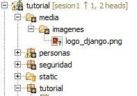
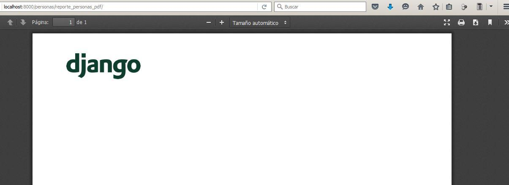
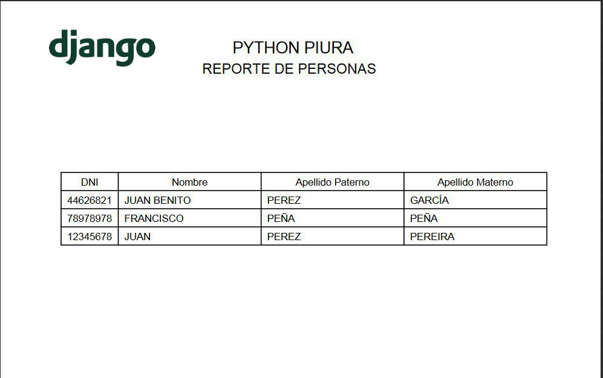

Reporte PDF en Django con Reportlab
Vamos a retomar nuestro proyecto tutorial, al que hemos tenido bastante olvidado estos últimos días y haremos un reporte en pdf utilizando la librería reportlab, para ello la instalamos:
pip install reportlab
Lo primero que haremos es poner el logo de django en la parte superior de nuestro reporte, por lo que debemos tener la imagen guardada en una ubicación fácil de obtener, por eso crearemos una carpeta llamada “media” en nuestro proyecto y dentro de esta, otra carpeta llamada imagenes, es aquí donde pondremos nuestro archivo logo_django.png:
Modificamos el archivo settings.py para poder establecer la ruta de la carpeta media:
MEDIA_ROOT = os.path.join(BASE_DIR, 'media')
Creamos la clase ReportePersonasPDF en el archivo views.py, el código está explicado en los comentarios:
#Importamos settings para poder tener a la mano la ruta de la carpeta media from django.conf import settings from io import BytesIO from reportlab.pdfgen import canvas from django.views.generic import View class ReportePersonasPDF(View): def cabecera(self,pdf): #Utilizamos el archivo logo_django.png que está guardado en la carpeta media/imagenes archivo_imagen = settings.MEDIA_ROOT+'/imagenes/logo_django.png' #Definimos el tamaño de la imagen a cargar y las coordenadas correspondientes pdf.drawImage(archivo_imagen, 40, 750, 120, 90,preserveAspectRatio=True) def get(self, request, *args, **kwargs): #Indicamos el tipo de contenido a devolver, en este caso un pdf response = HttpResponse(content_type='application/pdf') #La clase io.BytesIO permite tratar un array de bytes como un fichero binario, se utiliza como almacenamiento temporal buffer = BytesIO() #Canvas nos permite hacer el reporte con coordenadas X y Y pdf = canvas.Canvas(buffer) #Llamo al método cabecera donde están definidos los datos que aparecen en la cabecera del reporte. self.cabecera(pdf) #Con show page hacemos un corte de página para pasar a la siguiente pdf.showPage() pdf.save() pdf = buffer.getvalue() buffer.close() response.write(pdf) return response
Para poder acceder a esta clase debemos hacer la creación de la url correspondiente en el archivo urls.py:
url(r'^reporte_personas_pdf/$',login_required(ReportePersonasPDF.as_view()), name="reporte_personas_pdf"),
Ahora vamos a utilizar la url desde el archivo personas.html:
<div class='form-group'> <div class="row"> <div class="col-lg-9"> </div> <div class="col-lg-1"> <a href="{% url 'personas:reporte_personas_excel' %}" class="btn btn-info btn-block"> <span class="glyphicon glyphicon-list-alt"></span> </a> </div> {% if perms.personas.add_persona %} <div class="col-lg-1"> <a href="{% url 'personas:crear_persona' %}" class="btn btn-info btn-block"> <span class="glyphicon glyphicon-plus"></span> </a> </div> {% endif %} <div class="col-lg-1"> <a href="{% url 'personas:reporte_personas_pdf' %}" class="btn btn-info btn-block"> <span class="glyphicon glyphicon-file"></span> </a> </div> </div> </div>
Nos tiene que aparecer un ícono de un archivo:

El primer resultado será este:
Vamos a ponerle un encabezado a nuestro reporte que diga “Python Piura” y debajo “Reporte de Personas”, para ello colocamos el siguiente código debajo de la última linea del método “cabecera”:
#Establecemos el tamaño de letra en 16 y el tipo de letra Helvetica pdf.setFont("Helvetica", 16) #Dibujamos una cadena en la ubicación X,Y especificada pdf.drawString(230, 790, u"PYTHON PIURA") pdf.setFont("Helvetica", 14) pdf.drawString(200, 770, u"REPORTE DE PERSONAS")

Visualizaremos la tabla de personas, por lo que creamos el método tabla en la clase ReportePersonasPDF:
def tabla(self,pdf,y): #Creamos una tupla de encabezados para neustra tabla encabezados = ('DNI', 'Nombre', 'Apellido Paterno', 'Apellido Materno') #Creamos una lista de tuplas que van a contener a las personas detalles = [(persona.dni, persona.nombre, persona.apellido_paterno, persona.apellido_materno) for persona in Persona.objects.all()] #Establecemos el tamaño de cada una de las columnas de la tabla detalle_orden = Table([encabezados] + detalles, colWidths=[2 * cm, 5 * cm, 5 * cm, 5 * cm]) #Aplicamos estilos a las celdas de la tabla detalle_orden.setStyle(TableStyle( [ #La primera fila(encabezados) va a estar centrada ('ALIGN',(0,0),(3,0),'CENTER'), #Los bordes de todas las celdas serán de color negro y con un grosor de 1 ('GRID', (0, 0), (-1, -1), 1, colors.black), #El tamaño de las letras de cada una de las celdas será de 10 ('FONTSIZE', (0, 0), (-1, -1), 10), ] )) #Establecemos el tamaño de la hoja que ocupará la tabla detalle_orden.wrapOn(pdf, 800, 600) #Definimos la coordenada donde se dibujará la tabla detalle_orden.drawOn(pdf, 60,y)
Veamos como queda nuestro método get ahora con la nueva llamada al método tabla:
def get(self, request, *args, **kwargs): #Indicamos el tipo de contenido a devolver, en este caso un pdf response = HttpResponse(content_type='application/pdf') #La clase io.BytesIO permite tratar un array de bytes como un fichero binario, se utiliza como almacenamiento temporal buffer = BytesIO() #Canvas nos permite hacer el reporte con coordenadas X y Y pdf = canvas.Canvas(buffer) #Llamo al método cabecera donde están definidos los datos que aparecen en la cabecera del reporte. self.cabecera(pdf) y = 600 self.tabla(pdf, y) #Con show page hacemos un corte de página para pasar a la siguiente pdf.showPage() pdf.save() pdf = buffer.getvalue() buffer.close() response.write(pdf) return response
Y este será el resultado final:
Eso es todo por hoy. Saludos.